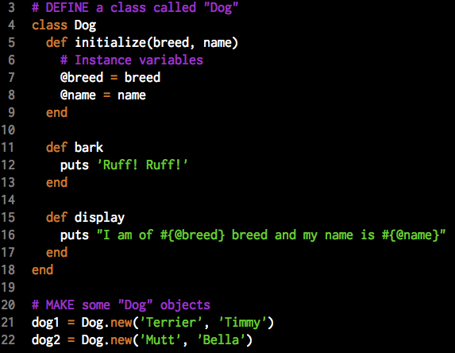
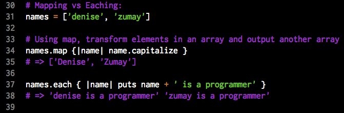
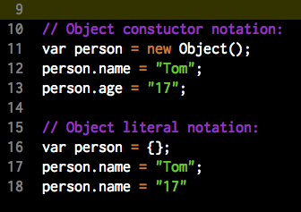
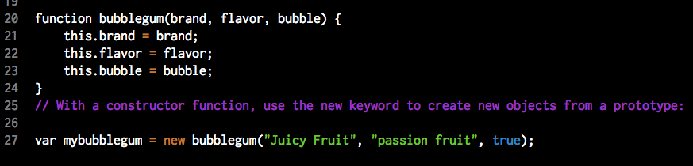
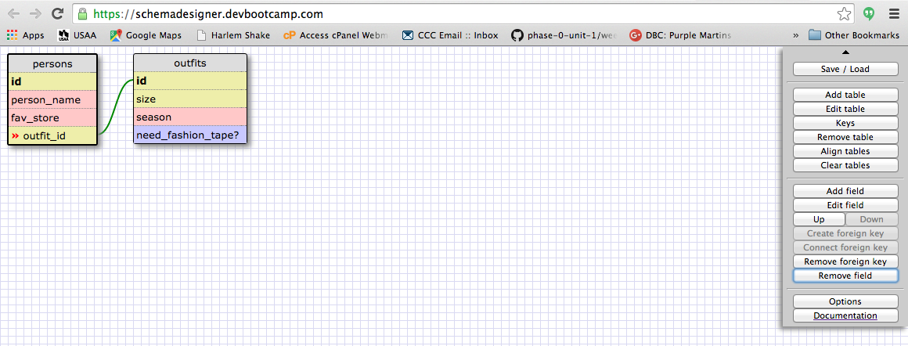
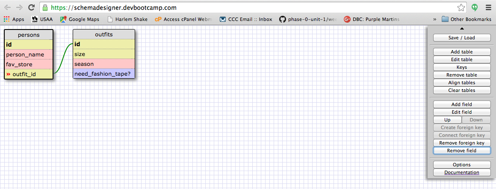

Here's what you'll find on this page:
I've found the best way for me recall what something is and how to make it in Ruby is to look at an example. So here are some examples of classes and objects in Ruby:
Don't reinvent the wheel! Instead, manipulate objects in Ruby using built-in methods. Here are some common built-in methods, but if you need more, consult Ruby Documenation on strings, arrays, objects, and classes.
gsub( x, y)
gsub( x) {...}
Replaces all strings matching x in $_ with y. If a block is specified, matched strings are replaced with the result of the block. The modified result is assigned to $_.
p( obj)
Displays obj using its inspect method (often used for debugging).
print([ arg...])
Prints arg to $defout. If no arguments are specified, the value of $_ is printed.
puts([ str])
Prints string to the default output ($defout). If the string doesn't end with a newline, a newline is appended to the string.
string.to_i
Converts a string into an integer
rand() or rand(num) or rand(num...num)
Generates random number: if no argument given, random number between 0 and 1; if one argument given, random number between 0 and num; if range given, random number between first num and second num. # this generates a number between 0 to 8
int.to_s
Converts an interger into an string.
string.split("") or string.split()
W
ith argument "", separates each character of a string with ""s inside an array. Without argument, puts string into array.
.join("")
sleep([sec])
Suspends program execution for sec seconds. If no argument, the program pulls a sleeping beauty...it sleeps forever!
sub(x) {...}
Replaces the first string matching x in $_ with y. If a block is specified, matched strings are replaced with the result of the block. The modified result is assigned to $_.
integer.times {|n| ...}
Iterates the block n times.
float_num.floor
Rounds a float (number with a decimal) down to the lowest whole number.
Enumerables are a bunch of fancy methods that loop through data structures in Ruby. A full list of enumerables is available in Ruby Docs. Here are some commonly used ones:
.each returns the original object it was called on because it's really used for its side effects and not what it returns. So each doesn't alter data; it just messes with it, returns the mess, then straightens the data back up to it's original form.
.map returns a new array filled with whatever gets returned by the block each time it runs.
When I started learning Ruby enumerable methods, I didn't understand the difference between map and each. But now I do and here's the diff, in screenshot form:
.each_with_index passes not just the current item but whatever position in the array it was located in.
.select returns a new object (e.g. array) filled with only those original items where the block you gave it returned true
.inject (aka .reduce) passes not just the element but whatever was returned by the previous iteration into the block. This one is hard to understand!
.any? returns true/false (see the question mark?) and answers the question, "do ANY of the elements in this object pass the test in my block?". If your block returns true on any time it runs, any? will return true.
.all? returns true/false and answers the question, "do ALL the elements of this object pass the test in my block?". Every time the block runs it must return true for this method to return true.
.none? returns true only if NONE of the elements in the object return true when the block is run.
.find returns the first item in your object.
.group_by will run your block and return a hash that groups all the different types of returns from that block.
.grep returns an array with those items that actualy match the specified criteria, like this: names_with_cap_J = ["James", "Hannah", "Hector"].grep(/J/) => ["James"]
.include? returns a boolean true / false if a collection contains whatever you put in the argument
.sort returns collection reordered based on argument, or without argument, in order from smallest to largest
.count returns an integer similar to .length; integer how many characters or elements is in a collection.
Javascript objects are similar to Ruby arrays: they are a collection of key-value pairs stored inside {}s. Here's an example of one:
Objects in JS can be made in two ways: object literal notation or object constructor. Here they are:
Object literal is the way most JS objects are made because easier to read and will work under any condition.
To call and / or assign new value pairs (called attributes) to a JS object, use the dot notation like in the example. Person.name = "Tom" MAKES the name attribute have the value of "Tom". console.log(Person.name); DISPLAYS the value of the name attribute of Person.
JavaScript objects inherit the properties and methods from their prototype. It's similar to how Ruby instances of objects inherit properties from their class. Objects created using an object literal inherit from a prototype called Object.prototype, automatically.
The standard way to create an object prototype is to use an object constructor function like this:

Credit: Inmotion Hosting
Credit: Women's Coding Collective
There are some rules that every SQL table should follow. Here they are:
Each row in a database table should have a primary key. This is a field (or collection of fields) which uniquely identify that row from all other rows. Rails defaults to using a synthetic primary key, which is just an arbitrary, auto-incrementing integer usually denoted by the field name id. It's called "synthetic" because it doesn't have any inherent meaning.
The assumption that the primary key is an auto-incrementing integer called id is baked deeply into Rails. Most web applications follow this convention.
Foreign keys are used to connect one table to another. Generally they will be used to connect a primary key (ie. id) to another table with a field for that primary key as well.
With SQL tables, data from table to table must be able talk to each other and know each other's values in order to provide seamless results to queries. You can connect tables to other tables by knowing what their relationship is. There are two types:
Examples:
 
